癸丑日
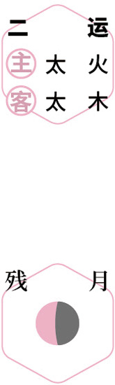
 观日出
观日出初夏｜节气｜ 立夏 ｜时间｜ 五月五日至五月廿一日
今年立夏需特别注意的健康问题：肠道病、口腔溃疡、盗汗、发热、传染病
原料：带皮生姜、红枣、五味子、甘草、陈皮、罗汉果。
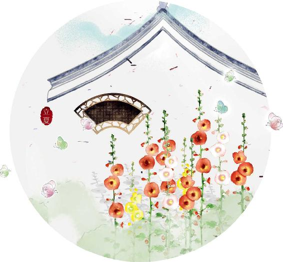
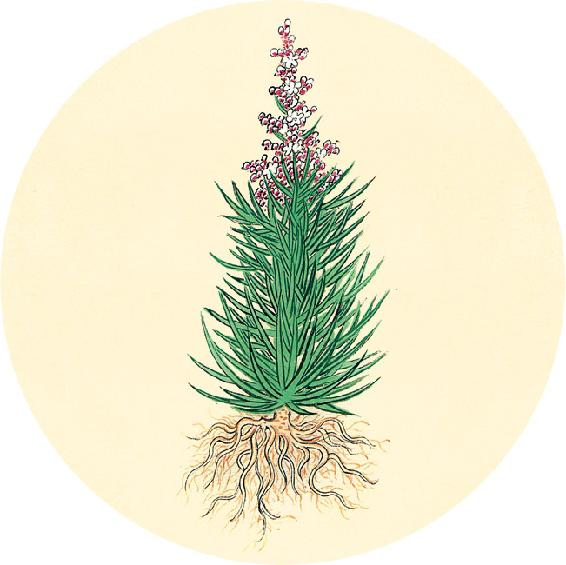
节气食方（一）
立夏到三伏的保健茶：五味姜枣茶（辛丑岁配方）
原料：带皮生姜2～3片、红枣6个。
加味（辛丑岁配方）：五味子6克、甘草9克、陈皮1个、罗汉果1个。气血虚的人再加黄芪30克、党参30克。
做法：将罗汉果压破，全部原料一起加水煮40分钟以上。可以煮3次，也可提前煮好放冰箱，需要时取出温热后饮用。
注意：女性经期只用基础配方，加红糖。
【释义】病人是本，医生是标，二者必须相得，若标本不相得，则病邪就不能制服，就是这个道理。（病人自身的体质、精气神、饮食起居、心理、对治疗的配合等这些是本，医生的治疗是标，标本相互配合，才能治好病。——允斌注）
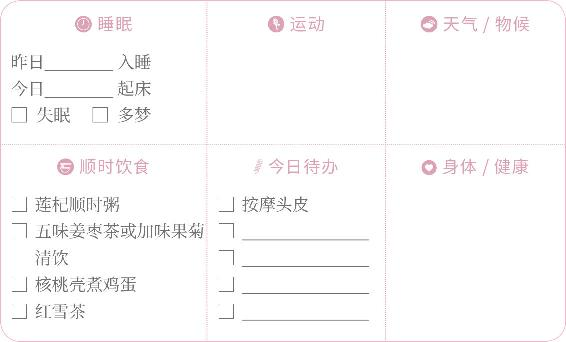

观日出
节气食方（二）
核桃壳煮鸡蛋（今年立夏、小满都要吃）
做法：
1. 将核桃壳洗净，用水泡30分钟后，煮1小时，晾凉。
2. 将整鸡蛋（不用去壳）放入晾凉的核桃水内，加入适量酱油和盐，煮开后转小火煮6～7分钟。
3. 用勺子将鸡蛋壳轻轻敲出均匀的网状裂缝，以便更好地入味。
4. 继续煮10分钟，关火起锅。
5. 浸泡一晚上，第二天吃，鸡蛋会更入味。
功效：补气、健脾、固肾，预防夏季暑热伤身。
注意：核桃壳要用没有漂白过的。
帝曰：其有不从毫毛而生，五脏阳以竭也。津液充郭（kuò，通“廓”），其魄独居，精孤于内，气耗于外，形不可与衣相保，此四极急而动中，是气拒（通“距”）于内而形施（yì，通“易”）于外，治之奈何？
——黄帝内经·素问·汤液醪醴论
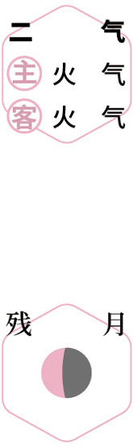
赏味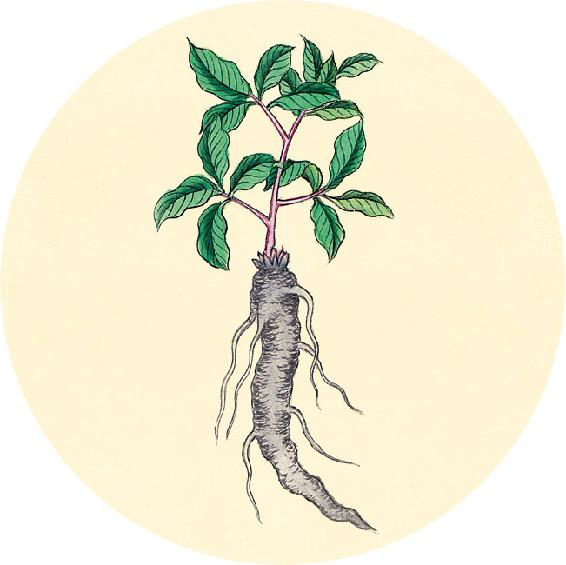
二十四节气茶养生
今年立夏节气品茶推荐：红雪茶。
红雪茶是一种野生茶，生长于高海拔藏区，当地人用来代茶饮用。它并不是茶树的叶子，饮后不会使人睡不着，反而能安神，调理失眠。
今年人体易感湿气，喝红雪茶可以祛风湿，对腰腿劳损疼痛也有帮助。
【释义】黄帝说：有的病并不先从体表毫毛发生，而是由于五脏阳气衰竭，以致水液充满皮肤，肺气独危，阴精损于内，阳气耗于外，形体浮肿，衣服都不合穿了。四肢肿急而影响到内脏，这是水气困于内，而形体变化于外，对这种病怎么治疗呢？
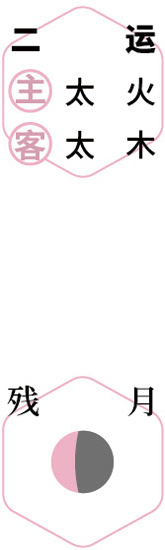
烹茶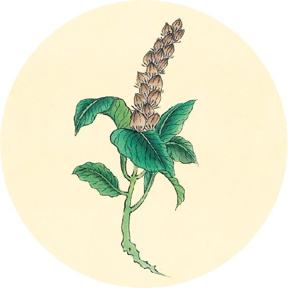
一候反思
平时是否有以下问题：
寒湿重 □ 是 □ 否
气血不通 □ 是 □ 否
胃寒 □ 是 □ 否
下巴常长痘 □ 是 □ 否
后颈、腹部、后腰或膝盖等局部凉 □ 是 □ 否
整天待在有冷气的房间 □ 是 □ 否
有2个或以上答“是”，五味姜枣茶可以一直喝到立秋。
翻到2021年12月25日，记录今天的自查一共有几个“是”。
岐伯曰：平治于权衡，去宛（yù，通“郁”）陈莝（cuò），微动四极，温衣，缪（miù）剌其处，以复其形。
——黄帝内经·素问·汤液醪醴论
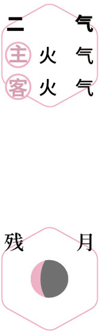
微笑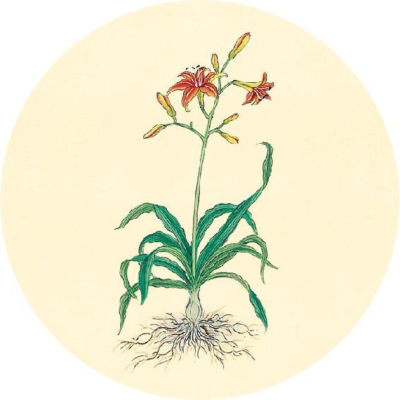
读书
“我至今仍能感受到母亲对我的关怀，对我的影响和帮助。这种感觉比母亲在世的时候还要强烈，强烈得难以测度。”
——纪伯伦
纪伯伦的这句名言说明：母亲给孩子的言传身教，在他们的往后人生会留下深刻的印记。
纪伯伦是世界著名的东方文化与艺术大师，既是诗人也是画家，曾创作著名画作《母亲》。纪伯伦认为母亲就是爱与美的化身，要唱出“母亲心里的歌”。
母亲节健康礼物建议在4月30日。
【释义】岐伯说：治疗（阳虚水肿病）要察看脉象的浮沉，祛瘀血、消积水，叫病人轻微地活动四肢，使阳气渐渐传布，然后用针缪刺病处，使人恢复原形。
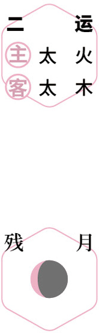
游园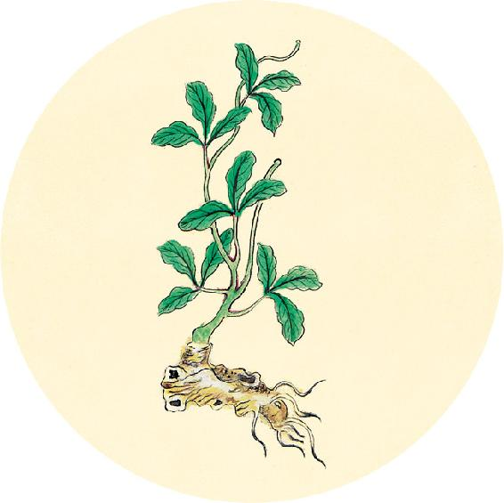
健康提示
立夏节气的养生功课：固摄肾气。
今年立夏特殊的养生要点——
今年立夏节气，湿热比往年夏季来得早，注意预防湿热引起的传染病。
保养重点：肾。
容易出现的问题：肠道病、口腔溃疡、盗汗、发热、传染病。
诊法常以平旦，阴气未动，阳气未散，饮食未进，经脉未盛，络脉调匀，气血未乱，故乃可诊有过之脉。
——黄帝内经·素问·脉要精微论
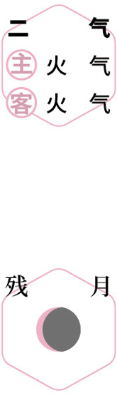
食姜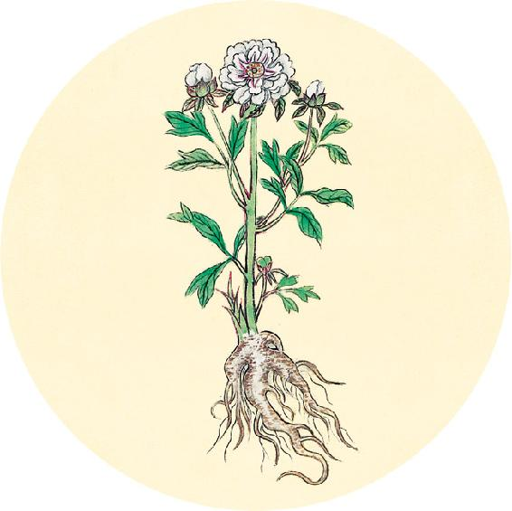
健康提示
从立夏开始进入夏天的第一个月。
本月养生关键词：固肾气、排肝毒。
上半月重点：固肾、补气。
下半月重点：补肝、降脂。
今年初夏，湿气比往年偏重，气温波动频繁，人体易受外感，今年这段时间喝姜枣茶养生特别重要。
【释义】诊脉应该在平旦（清晨太阳刚出地平线时）进行，因为那时人体的阴阳之气尚未被扰动、耗散，又未用过饮食，经脉之气不亢盛，经络之气调和，气血没有扰乱，所以容易诊出有病的脉象。
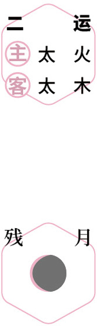
煮茶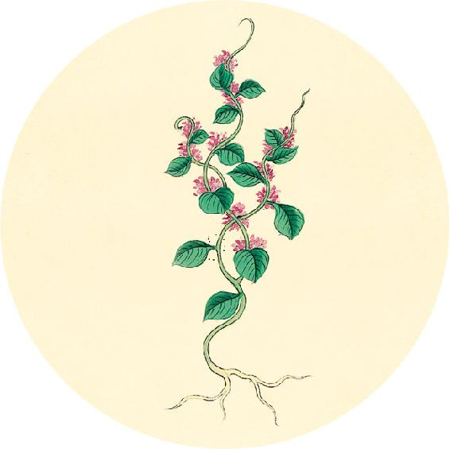
健康提示
辛丑岁的二气还有9天结束。从小满节气开始，进入辛丑岁的三气阶段。
历时62天（5月21日3点—7月22日23点），
包含小满、芒种、夏至、小暑四个节气。
主气——暑气；客气——湿气。
今年三气这两个月，雨水多，下雨后会带来寒气，湿气也比较重。
容易出现的问题：心脏病、小腿肿、胸闷、腹胀、全身酸重。
保健食方：桑果百合四物膏（做法见5月13日）。
辛丑岁全年需要喝的莲杞顺时粥，在三气阶段尤为重要。
切脉动静，而视精明，察五色，观五藏有余不足，六府强弱，形之盛衰，以此参伍，决死生之分。
——黄帝内经·素问·脉要精微论
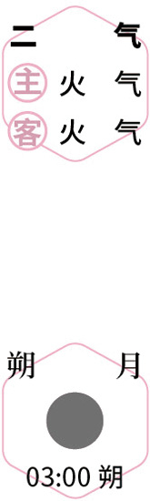
防病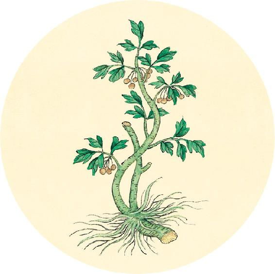
健康提示
辛丑岁三气保健方：桑果百合四物膏（小满、芒种、夏至、小暑）
原料：桑椹600克、百合120克、莲子120克、酸枣仁600克、红糖适量。
做法：将百合、莲子、酸枣仁加水后，用熬中药的方法三煎三煮，去渣取汁，加入桑椹，用料理机打成果泥，入锅熬到浓稠，加红糖收膏。
吃法：放冰箱保存，每日吃2～3勺。
功效：养心、助眠、补血、乌发、抗衰老。
适合人群：贫血、心悸失眠、耳鸣、更年期提前、早生白发。
【释义】诊察脉象动静变化的同时，还要看病人的双眼瞳神、面部五色，分辨其五脏是有余还是不足，六腑是强还是弱，形体是壮实还是衰弱，将这几个方面综合考察，来判断病人的死、生。
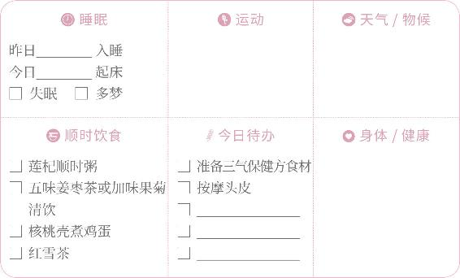
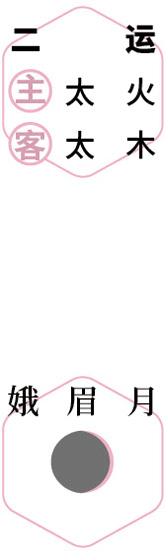
进补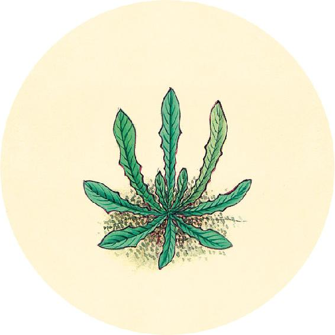
二候反思
女性是否有以下问题：
月经不规律，时而提前时而推迟 □ 是 □ 否
痛经 □ 是 □ 否
闭经 □ 是 □ 否
经期之前感觉小腹胀 □ 是 □ 否
脸上有斑 □ 是 □ 否
有一个答“是”，每日喝茶饮时可加入玫瑰和月季各12朵。如果面部黄褐斑较明显，可以再加陈皮1个、青皮3～10克（经期经量过多时暂时不喝）。
夫脉者，血之府也。长则气治，短则气病，数则烦心，大则病进。
——黄帝内经·素问·脉要精微论
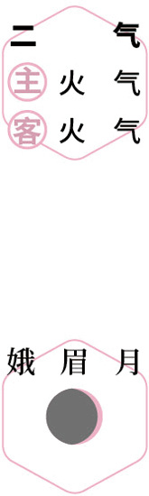
反思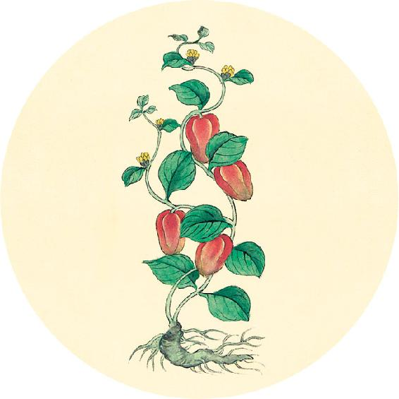
健康提示
如何管理血压：
第一步：知晓血压，定期测量。
第二步：早期调理。
现在得高血压的人越来越年轻，这与生活压力大、肥胖和伤肝的生活习惯很有关系。一旦发现血压有升高的趋势，就要开始调理（中青年人血压高的保健茶方在5月16日）。
第三步：区分体质，长期调养。
如果已经患上了高血压，平时保健可按体质类型来对症调理。
【释义】脉是血气所聚的地方。脉长（脉体超过本位）说明气机顺达，脉短（脉体不短而不及本位）说明气分有病，脉数（往来急速）说明心里烦热，脉大（脉体宽大）说明病势正在发展。
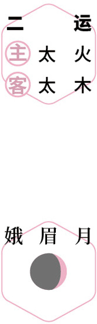
思亲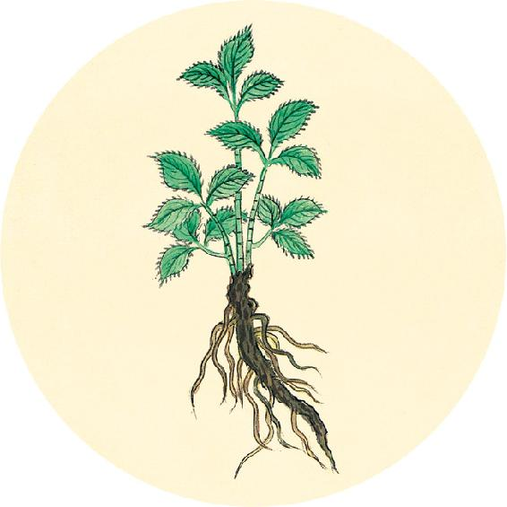
健康提示
中青年人血压高的保健茶方
原料：新鲜柠檬1个、荸荠10个。
做法：柠檬切成两半，荸荠去掉皮，加水煮，煮到柠檬软烂，就可以喝了。
平时经常吃柠檬，也有帮助。
注意：调理高血压的饮食，不是吃下去马上使血压下降，而是针对血压升高的原因去调理。因此，高血压食方经常食用有助于高血压趋向正常，但并不会让低血压的人吃了血压更低。
上盛则气高，下盛则气胀。
——黄帝内经·素问·脉要精微论
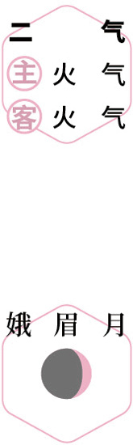
赏味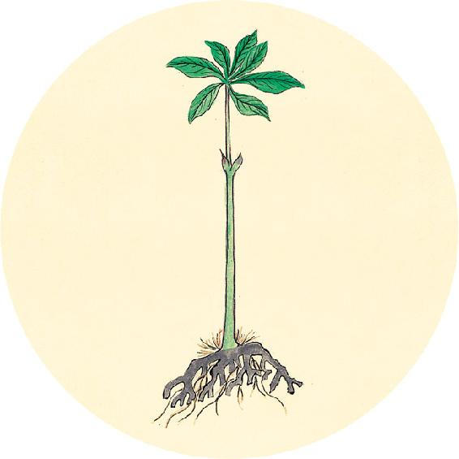
健康提示
今天是世界高血压日。可扫码观看高血压类型自测及食方。
各种类型高血压的保健食方
□ 肝阳上亢型高血压，喝香蕉皮水
□ 痰湿型高血压，喝川陈丝瓜茶
□ 阴虚型高血压，喝皮蛋墨鱼粥
□ 阴阳两虚型，喝核桃糯米粥
【释义】上部脉盛（寸脉胀大而有力），是病气塞于胸，可见呼吸急促、喘满之症；下部脉盛（尺脉大而有力），是病气胀于腹，可见胀满之病。
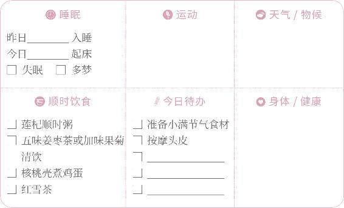
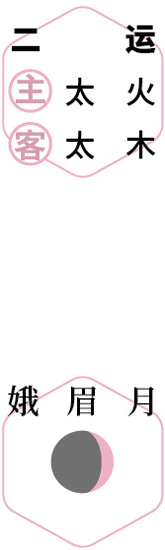
问安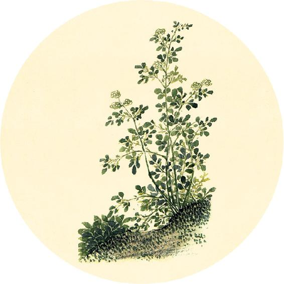
健康提示
葛花和枳椇是传统解酒毒专用的一对药，自古有“千杯不醉”的美名。
千杯不醉茶：川陈枳椇四物饮
原料：枳椇12克、葛花15克（脾胃虚弱用葛根）、山楂16克、川陈皮1个。
做法：沸水冲泡后饮用，加适量红糖，效果更佳。
功效：
1. 喝酒前饮用能预防醉酒，喝酒后饮用可以解酒毒。
2. 预防内脏脂肪堆积。
3. 过食油腻食物后，可以用来开胃消食。
注意：孕妇、胃溃疡、十二指肠溃疡的人不宜吃山楂。
代则气衰，细则气少，涩则心痛。
——黄帝内经·素问·脉要精微论
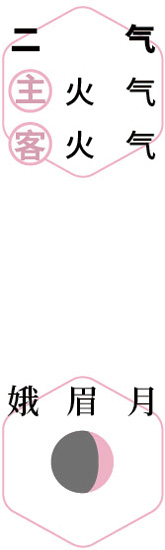
养心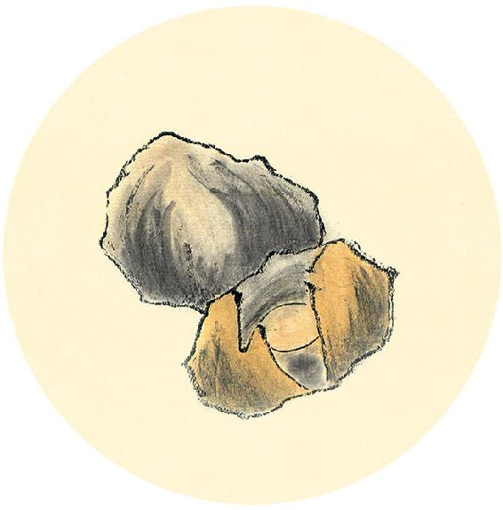
食材准备
后天进入小满节气。
1.青梅酒
原料：青梅、白酒、蜂蜜或红糖。
2.冰梅酱
原料：黄梅、蜂蜜或红糖、盐。
3. 辛丑岁三气保健方：桑果百合四物膏（小满、芒种、夏至、小暑）
原料：桑椹600克、百合120克、莲子120克、酸枣仁600克、红糖适量。
4.五味姜枣茶
原料：带皮生姜2～3片、红枣6个。
加味（辛丑岁配方）：五味子6克、甘草9克、陈皮1个、罗汉果1个。气血虚的人再加黄芪30克、党参30克。
5.辛丑岁全年保健粥：莲杞顺时粥（做法见2月11日）
原料：枸杞子、莲子、炒荷叶、川陈皮、茯苓、粥料。
【释义】代脉（动而中止，良久复动，动止有节，是一种有规律的间歇脉），为脏气衰弱；细脉（脉细如丝，软而无力），为气虚血少；涩脉（往来艰涩不畅），主心痛之症。
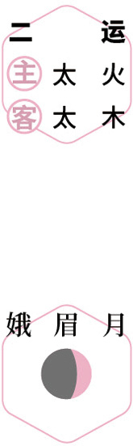
静养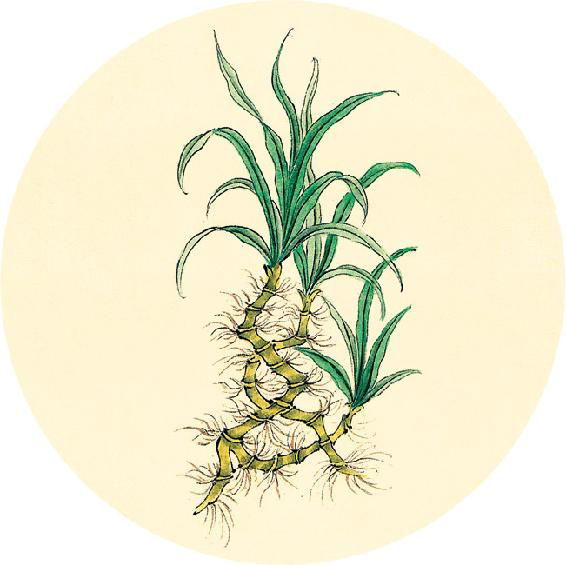
节气总结备
吃核桃壳煮鸡蛋的次数________
喝加味果菊清饮的次数________
喝五味姜枣茶的次数________
喝莲杞顺时粥的次数________
身体哪些方面有改善_________________________
浑浑革至如涌泉，病进而危弊；绵绵其去如弦绝，死。
——黄帝内经·素问·脉要精微论
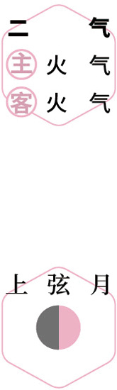
试酒